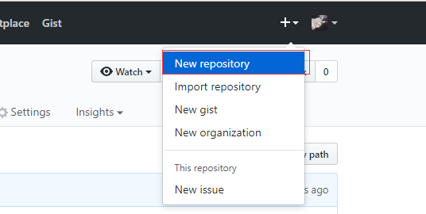
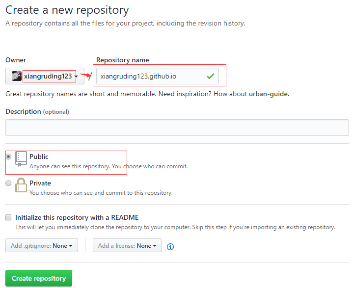
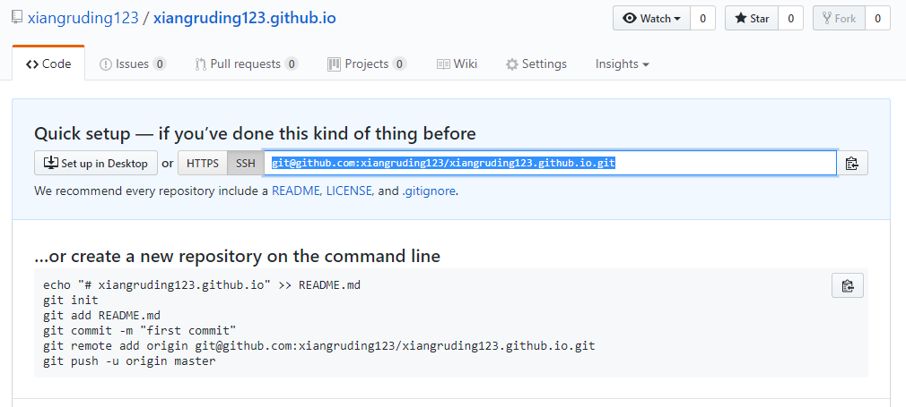
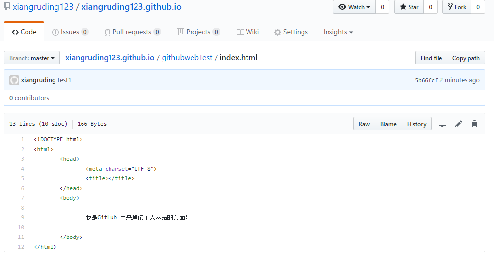
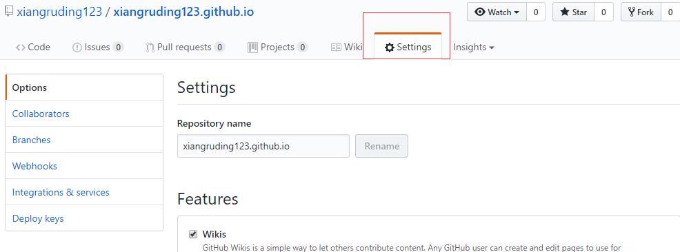
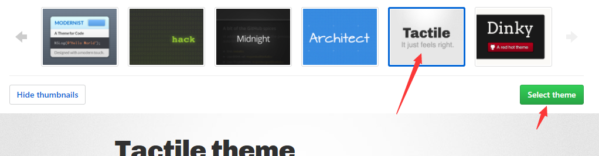

1、GitHub基础
GitHub账号注册可以去搜教程。
然后个人电脑是windows平台，因此需要装个电脑版的Git来方便推送到GitHub上。这个因个人而异，有些人喜欢图形化界面的话GitHub有提供github desktop。
2、新建一个特殊的仓库
注意：这里的项目名称跟我们平常随便命名的项目名不一样，这里项目名要按照GitHub 个人网站项目的规定来写。规则就是：
YOUR-GITHUB-USERNAME.github.io
比如我的 GitHub 用户名是 xiangruding123，那我就要填写 xiangruding123.github.io。然后选择公开模式，接着点击创建仓库按钮。
3、上传index.html文件到项目首页，不会上传的自行百度。（txt文件可选，不上传也可以）
4、上传成功之后，进入了项目主页面。点击设置按钮。
 5、往下滑会出现，那个连接就是你的网站地址，下面那个source要注意是不是选择正确。

选择一个你喜欢的主题：
6、进入网站，就大功告成了（后期自己修改html，就可以实现更酷炫的网站）。